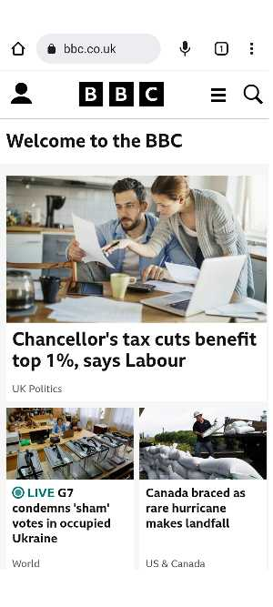

Visual
Onzie
https://www.onzie.com/
Onzie is an independent, female owned small business, born in Venice Beach,CA
they offer accessible and high-quality activewear that's both comfortable and durable in saltwater
,Chlorine, and heavy seat enviroment. In this website we can appreciate the visual applied in it,
the correct use of visual in this case allows Onzie to showcase their products and it's visiblity.
Hierachy
BBC
https://www.bbc.co.uk/

The BBC is the world's leading public service broadcaster Established by a Royal Charter,
the BBC is principally funded through the licence fee paid by UK households.
We can see how the hierachy was used in the website to droll the attention of visiters to the first big picture
before the small ones bellow.
Repetition
colly
https://www.colly.com/
This is a personal website owned by Simon Collison who is a product designer, writer,
multimedia artist and musician. He uses the website to teach about web designs.
He applied repitition in this website to show the important of family tree and history.